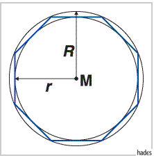

Regelmäßige konvexe Vielecke haben n gleiche Seiten und n gleiche Innenwinkel. Der Schnittpunkt der Mittellote der Seiten des Vielecks ist der Mittelpunkt M des einbeschriebenen und des umbeschriebenen Kreises mit den Radien r bzw.  . Die Seiten des n-Ecks sind Tangenten des Inkreises und Sehnen des Umkreises. Sie bilden um den Inkreis das Tangentenvieleck, im Umkreis das Sehnenvieleck.
. Die Seiten des n-Ecks sind Tangenten des Inkreises und Sehnen des Umkreises. Sie bilden um den Inkreis das Tangentenvieleck, im Umkreis das Sehnenvieleck.

Die Zerlegung eines regelmäßigen konvexen n-Ecks ergibt n gleichschenklige kongruente Dreiecke um den Mittelpunkt  , die Bestimmungsdreiecke.
, die Bestimmungsdreiecke.
Die Elemente des n-Ecks werden im folgenden durch den Index  , die des 2n-Ecks mit dem Index 2n gekennzeichnet.
, die des 2n-Ecks mit dem Index 2n gekennzeichnet.
Für regelmäßige konvexe n-Ecke gelten die folgenden Beziehungen.
- Zentriwinkel:
-
- Basiswinkel:
-
- Außenwinkel:
-
- Innenwinkel:
-
- Umkreisradius:
-
- Inkreisradius:
-
- Umfang:
-
- Seitenlänge:
-
- Flächeninhalt:
-
- Beziehungen zwischen Seitenlängen und Flächeninhalten von n-Eck und 2n-Eck:
-